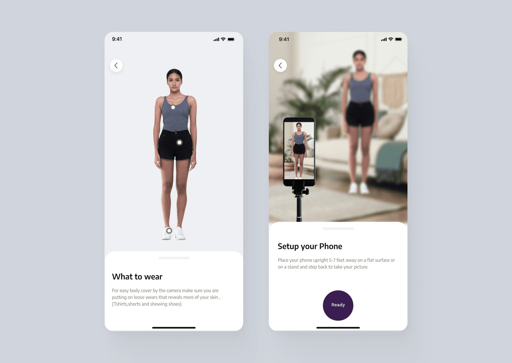
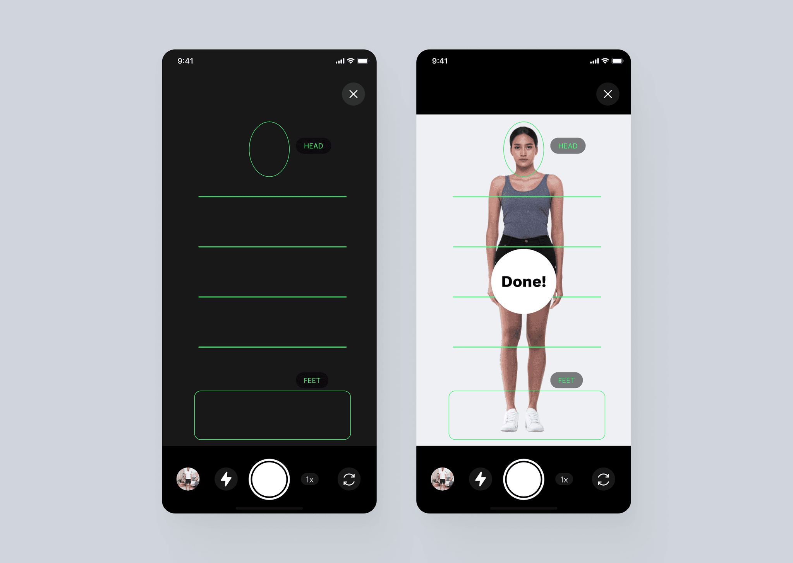
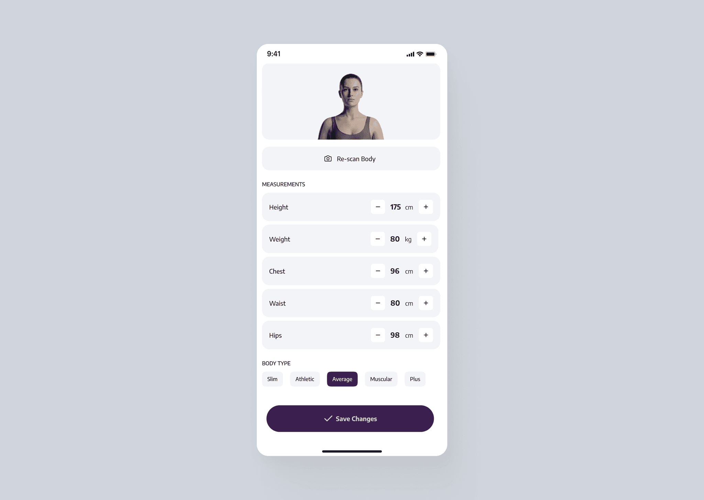
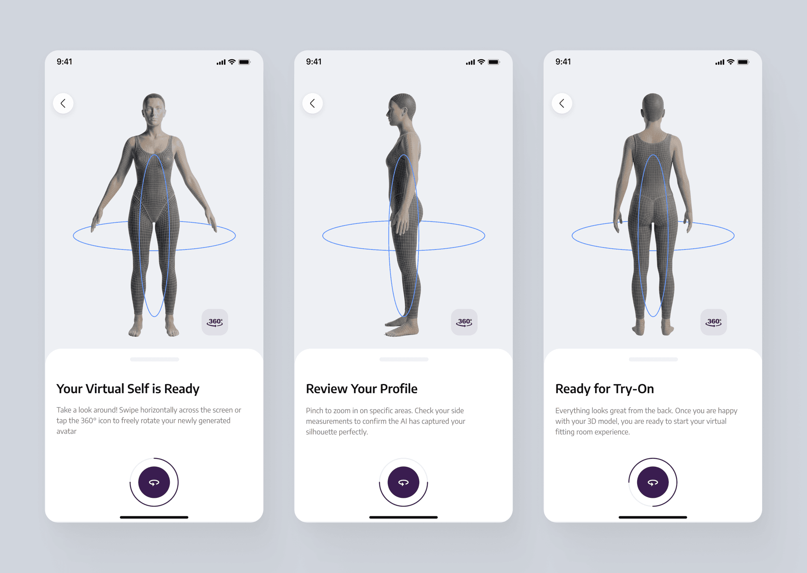
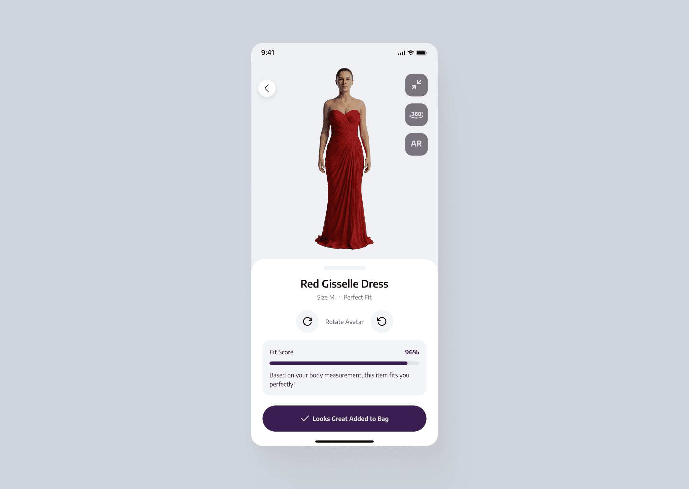
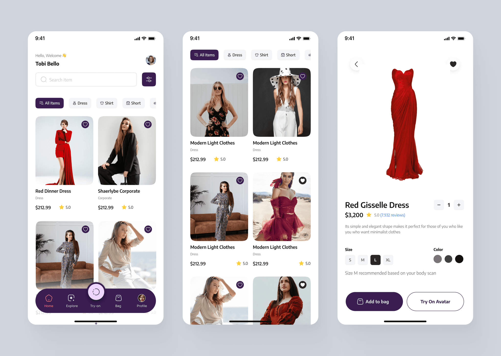

Buying clothes online is fundamentally broken. Users look at a 6-foot-tall model on a screen and have to guess, "Will this look good on me?" When they guess wrong, they return the item. This "fit anxiety" is a massive crisis that costs online retailers billions annually in reverse logistics.
Existing "Size Guides" were basically spreadsheets that nobody wanted to read. The business goal for FitVision was incredibly ambitious: Could we build a digital fitting room inside a smartphone?
My challenge as the Lead Designer was daunting. I had to take complex spatial-mapping AI—technology that is usually clunky and intimidating—and make it feel as effortless as taking a selfie.
The Messy Middle: Designing for Trust & Friction
Building an AR try-on app isn't just about cool graphics; it's an exercise in human psychology. During the initial architecture phase, I identified three massive points of user friction that would kill the app if not solved.
Challenge 1: The "Awkward Scan" Problem
Getting a user to stand perfectly still in front of a camera to be scanned is highly intrusive. If the onboarding felt like a medical exam, they would drop off immediately.
The UX Pivot: I replaced dense technical manuals with a visual-first onboarding. I emphasized the need for form-fitting attire to ensure measurement accuracy and designed a color-coded alignment game (Head and Feet) to turn a complex spatial scan into a 90-second success story.


Embracing Edge Cases: Because AI is never perfect, I designed a "Hybrid Fallback" state. If the lighting was bad, users could manually adjust their chest, waist, and hip data, giving them a sense of control over the machine.

Challenge 2: Overcoming the "Snapchat Filter" Bias
When early users saw clothes on their avatar, they didn't trust it. They assumed it was just a generic visual filter, not an actual representation of their body size.
Users needed to see the math. I designed a transition state that temporarily exposed the user’s exact 3D wireframe mesh before loading the clothes. By letting the user peek behind the curtain at the spatial mapping, we instantly established trust. It proved the app actually understood their unique geometry.

Challenge 3: Data Over Aesthetics (The Fit Score)
A 3D avatar is a cool party trick, but it doesn't solve the business problem of returns. Users still needed to know what size to click.
The Solution: I shifted the core UI away from just visualizing the garment and anchored it on a proprietary "Fit Score" (e.g., 96%). The interface visually cross-referenced the garment's dimensions with the user's scanned body data, providing a definitive, data-driven answer to the question: "Will this fit me?"

Closing the Loop: The Conversion Engine
Ultimately, FitVision had to be a seamless e-commerce engine. I designed the primary shopping interface to feel familiar to any modern shopper, but with a powerful twist.
Once a user achieved a high Fit Score, the UI eliminated all hesitation. The primary Call-to-Action dynamically updated to a confident "Looks Great, Added to Bag."

The MVP Impact
By focusing heavily on the psychology of the user rather than just the capabilities of the AI, the MVP beta tests yielded incredible behavioral shifts:
Frictionless Setup: The visual onboarding reduced avatar creation time to under 90 seconds.
Hyper-Engagement: Beta users "tried on" an average of 12 to 15 items natively within the 360-degree viewer—a volume impossible in a physical store.
Destroying Fit Anxiety: Qualitative feedback proved the "Fit Score" metric successfully neutralized purchase hesitation, directly validating the core business hypothesis